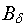
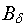
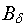
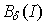
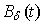
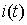

- зависимости магнитной индукции
 в зазоре от изменения тока I катушки.
- зависимости магнитной индукции
 в зазоре от изменения тока I катушки.Задание 4. Собрать схему магнитной цепи (рис. 15.5, а) (или открыть файл Lr15-2.ewb при выполнении работы в среде EWB, или файл Circuits\Lr15-2.ms8 при работе в среде MS8SD) и снять характеристику
- зависимости магнитной индукции
 в зазоре от изменения тока I катушки.

С этой целью;
- источник постоянного напряжения F (см. рис. 15.4) заменить генератором линейно изменяющегося напряжения FG и включить его в схему замещения катушки (левый контур, рис. 15.5, а), содержащей резистор с электрическим сопротивлением обмотки Re = Rэ, зависимый источник напряжения INUT1, управляемый током I = Uэ/Rэ катушки, с коэффициентом передачи, равным 1, и зависимый источник напряжения INUT2, управляемый током I = Uэ/Rэ катушки, с коэффициентом передачи, равным числу витков w катушки. При этом в схеме замещения магнитной цепи (см. правый контур рис. 15.5, а) действует МДС F = wI;
- для наблюдения графика зависимости  на экране осциллографа на вход канала А подать напряжение, численно равное току I катушки, а на вход канала В - напряжение, пропорциональное магнитной индукции Вδ, снимаемое с выходных зажимов зависимого источника напряжения INUT3, управляемого током (магнитным потоком Ф = F/(Rδ + Rм) = wI/(Rδ + Rм)) с коэффициентом передачи, равным 1/Sм;
- установить параметры элементов схемы, рассчитанные или полученные при выполнении предыдущих заданий, и режимы функционирования источников энергии и осциллографа (см. рис. 15.5, а-в для примера, рассмотренного в п. 3 раздела "Теоретические сведения …");
- запустить программу EWB или MS8SD. Установить режим В/А работы осциллографа, см. рис. 15.5, в). Срисовать с экрана осциллографа (или распечатать) график зависимости и определить ток в катушке, при котором магнитная индукция в зазоре в 1,5 раза больше значения индукции, рассчитанного в п. 3 раздела "Теоретические сведения …";
- определить диапазон допустимых значений тока, в пределах которого зависимость В(I) катушки с ферромагнитным сердечником можно считать линейной;
- установить: режим Y/T работы осциллографа (см. рис. 15.5, б), курсор 1 на значении тока катушки, рассчитанного в п. 3 раздела "Теоретические сведения …", а курсор 2 - на значении тока, при котором магнитная индукция в зазоре увеличилась в 1,5 раза;
- срисовать с экрана осциллографа (или распечатать) графики зависимостей  и .